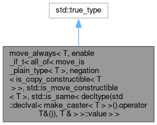

Quad-SDK
Loading...
Searching...
No Matches
move_always< T, enable_if_t< all_of< move_is_plain_type< T >, negation< is_copy_constructible< T > >, std::is_move_constructible< T >, std::is_same< decltype(std::declval< make_caster< T > >().operator T&()), T & > >::value > > Struct Template Reference
Inheritance diagram for move_always< T, enable_if_t< all_of< move_is_plain_type< T >, negation< is_copy_constructible< T > >, std::is_move_constructible< T >, std::is_same< decltype(std::declval< make_caster< T > >().operator T&()), T & > >::value > >:

[
legend
]
Collaboration diagram for move_always< T, enable_if_t< all_of< move_is_plain_type< T >, negation< is_copy_constructible< T > >, std::is_move_constructible< T >, std::is_same< decltype(std::declval< make_caster< T > >().operator T&()), T & > >::value > >:
[
legend
]
The documentation for this struct was generated from the following file:
unitree_legged_sdk/python_wrapper/third-party/pybind11/include/pybind11/
cast.h
Generated by
1.9.5